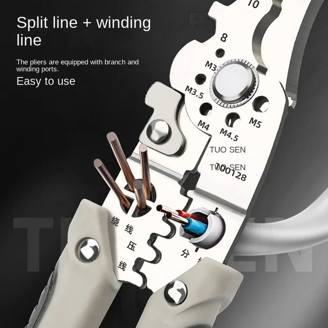
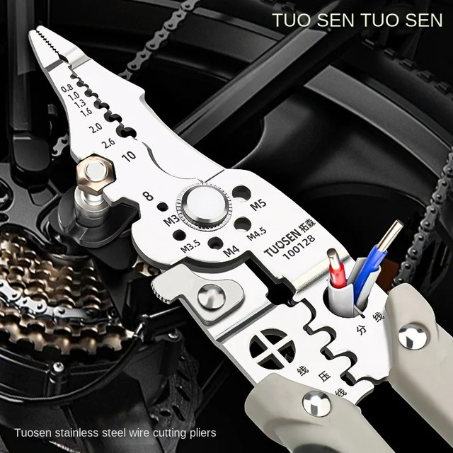
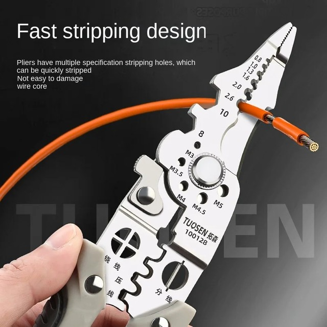
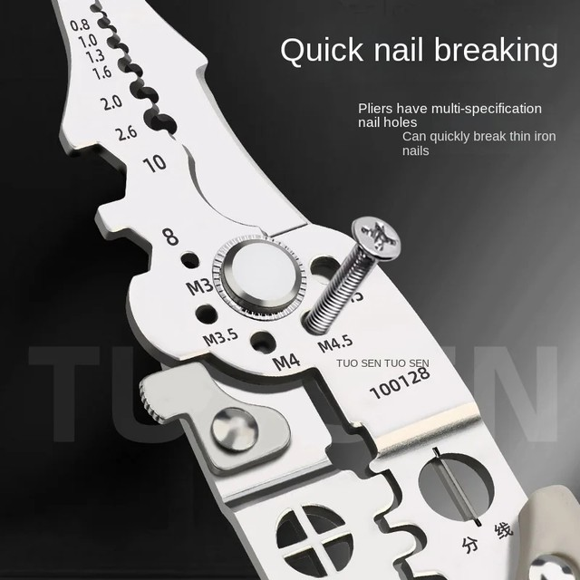
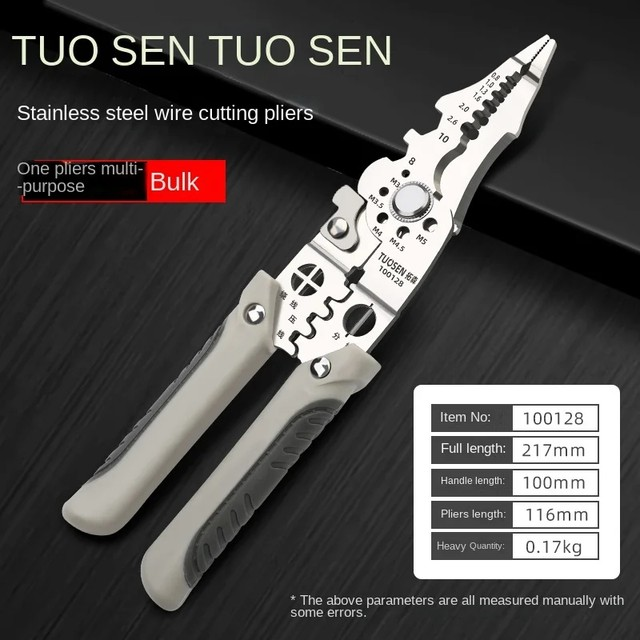
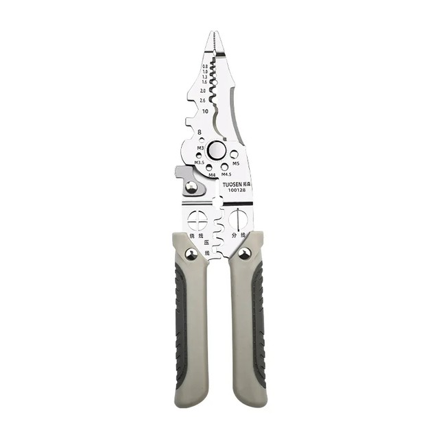
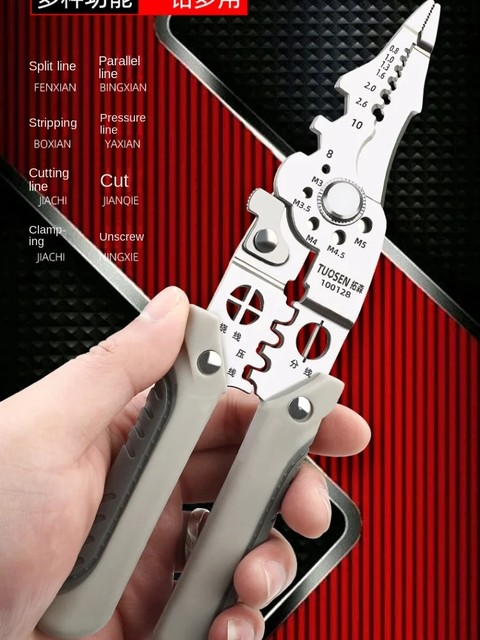
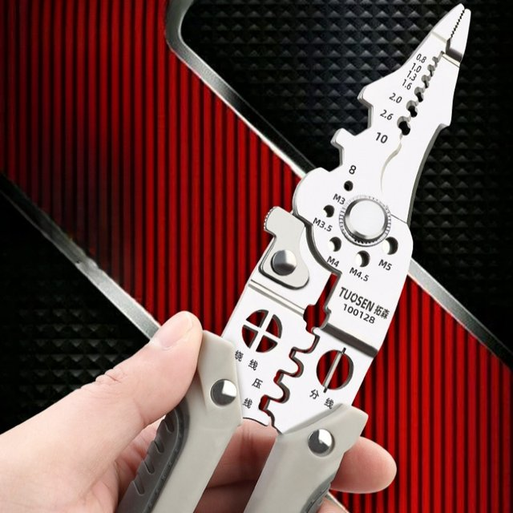

• Multifunctional Design :This electrician's plier is designed for multiple functions, including wire splitting and stripping, making it a versatile tool for electricians.
• Long Nose Feature :The long nose design of this plier allows for precise handling and operation, making it ideal for intricate metalworking tasks.
• Stainless Steel Material :Constructed from durable stainless steel, this plier is designed to withstand heavy use and resist corrosion, ensuring long-lasting performance.
• DIY Friendly :This plier is perfect for DIY enthusiasts, offering a practical tool for metalworking projects both big and small.
• Origin : Mainland China
• Handle Style : Straight







